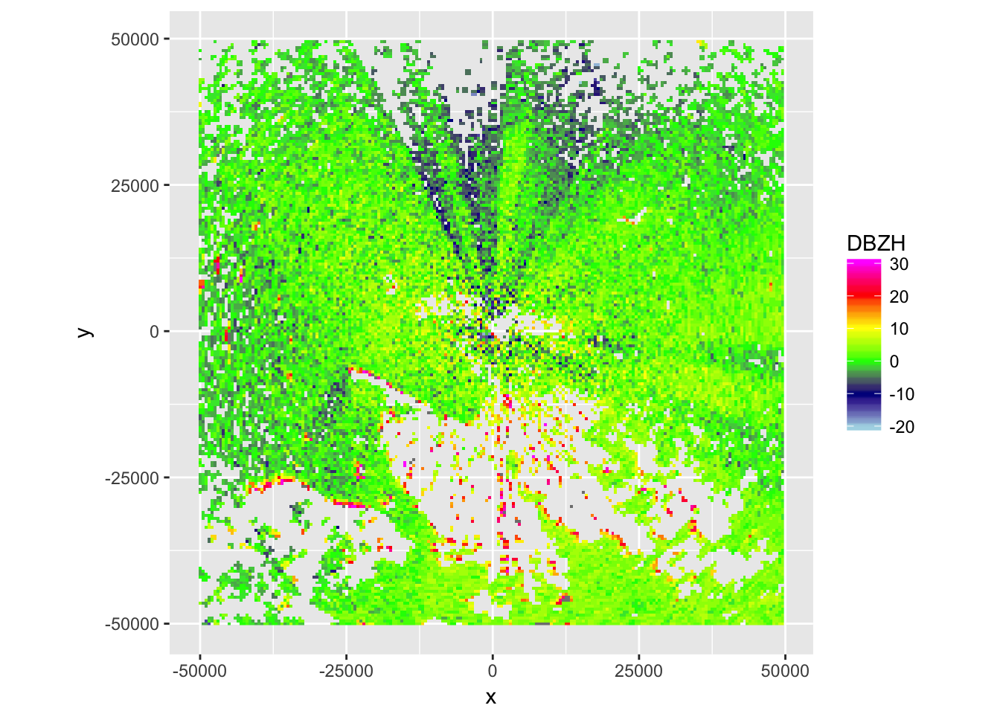
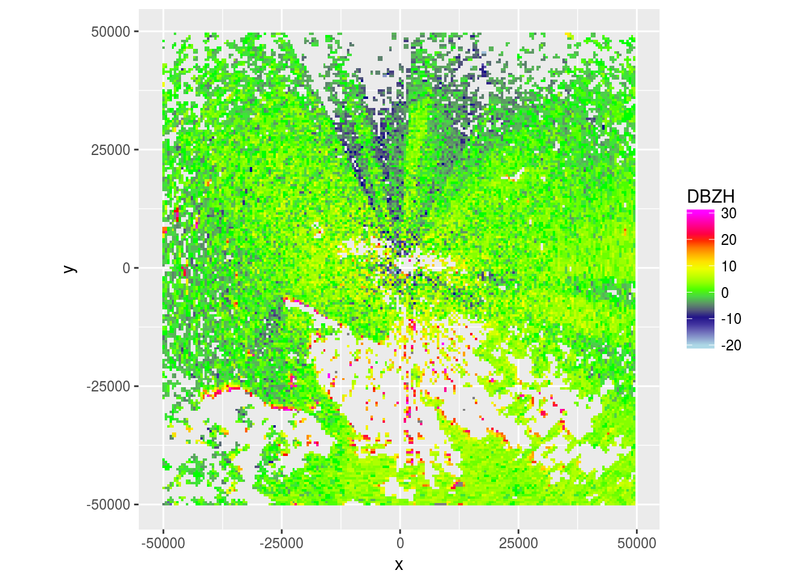
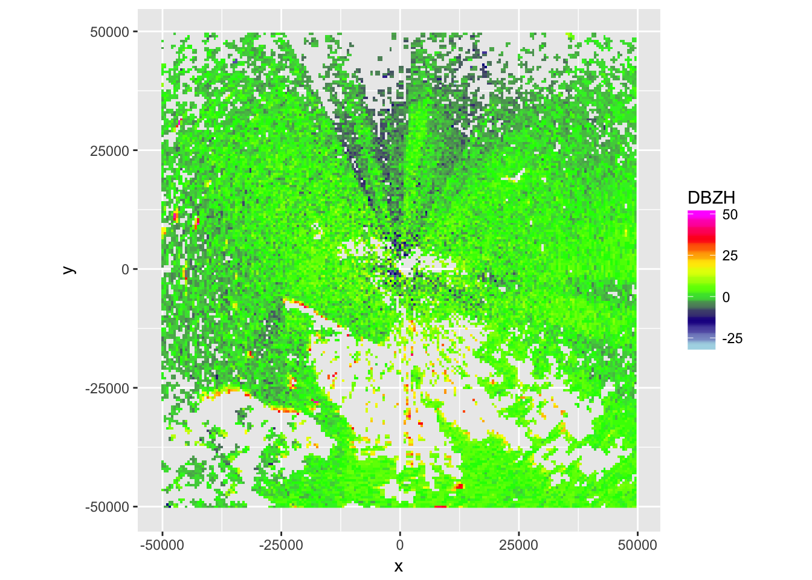
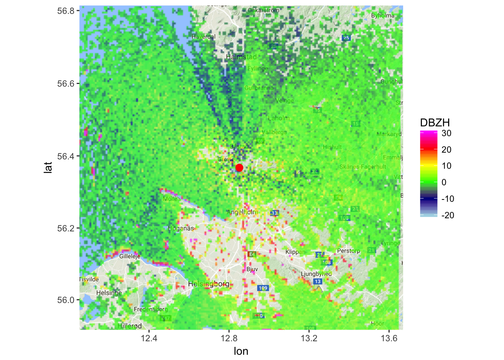
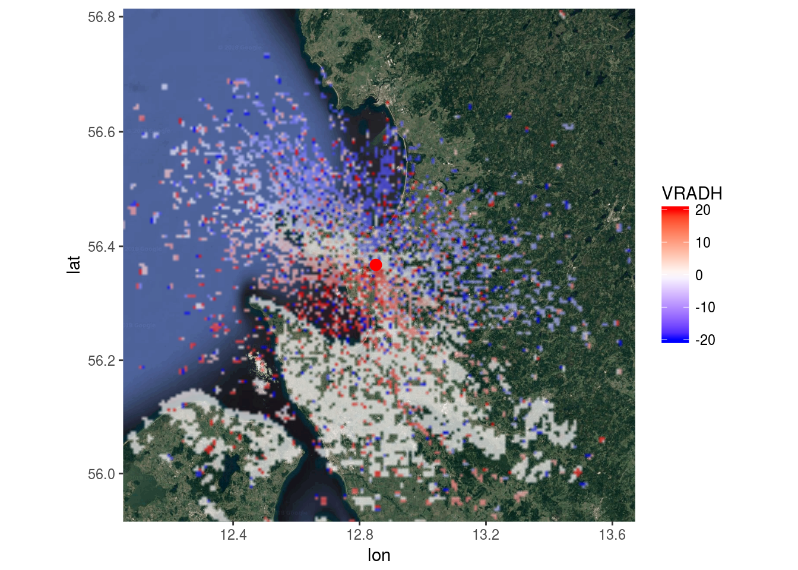

vignettes/intro_ppi.Rmd
BioRad provides code to plot a PPI of an ODIM scan. An ODIM scan can be extracted from an ODIM polar volume (pvol), though at moment of writing this documentation, single scans from folders cannot yet be read in.
Here is example code how to extract a scan from a polar volume:
# locate example polar volume
pvol.path <- system.file("extdata", "volume.h5", package="bioRad")
# load the pvol:
pvol <- read.pvol(pvol.path)
# copy the first scan to a new object 'scan2'
scan2 <- pvol$scans[[1]]
scan2## Polar scan (class scan)
##
## parameters: VRADH DBZH ZDR RHOHV PHIDP
## elevation angle: 0.5 deg
## dims: 480 bins x 360 raysscan2$params[[4]]## Polar scan parameter (class param)
##
## quantity: RHOHV
## dims: 480 bins x 360 raysThis is example code how to create a PPI plot:
# load an example scan:
data(SCAN)
# make ppi for the scan
ppi <- ppi(SCAN)
# plot the first scan parameter of the ppi, which in this case is "VRADH"
plot(ppi)
# plot the reflectivity quantity
plot(ppi,param="DBZH")
# change the range of reflectivities to plot to -30 to 50 dBZ
plot(ppi,param="DBZH",zlim=c(-30,50))
Additionally different types of underlying maps can be added using the function basemap:
# grab a basemap that matches the extent of the ppi
basemap <- basemap(ppi)## downloading zoom = 9 ...# map the reflectivity quantity of the ppi onto the basemap
map(ppi,map=basemap,param="DBZH")## Warning: Removed 1 rows containing missing values (geom_rect).
# download a different type of basemap, e.g. satellite imagery
### see get_map() in ggmap library for full documentation of options ###
basemap <- basemap(ppi,maptype="satellite")## downloading zoom = 9 ...# map the radial velocities onto the satellite imagery
map(ppi,map=basemap,param="VRADH")## Warning: Removed 1 rows containing missing values (geom_rect).
More functionallity of the package bioRad, such as plotting vertical profiles of birds (VPB), adjusting the radar cross section and calculating migration traffic rates, can be find in its documentation.